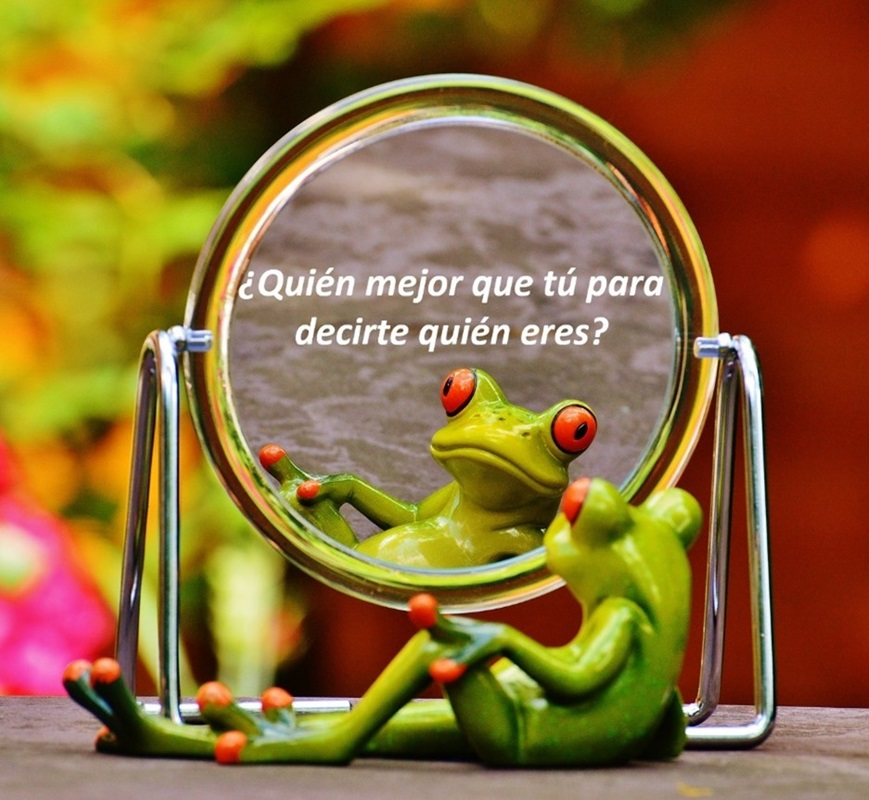

Propuestas Pedagógicas • 7 Ago 2023
Marcelo Esper
Todos los días nos vemos en el espejo, pero muchas veces nos miramos sin vernos. Por ello, algo que es bien complejo para el ser humano es descubrirse a sí mismo. Es decir, puede que a menudo veamos nuestro color de pelo, nuestro peinado, nuestra cara y nuestras ropas, pero pocas veces nos miramos por dentro. El autoconcepto, es la base del desarrollo personal y de las habilidades sociales y es muy importante desarrollarlo. A través de esta dinámica, conseguiremos que los niños y niñas, además de divertirse, hagan una reflexión sobre sus propias cualidades, gustos, intereses y formas de ser, se trata de fomentar un vistazo hacía el propio ser interior.